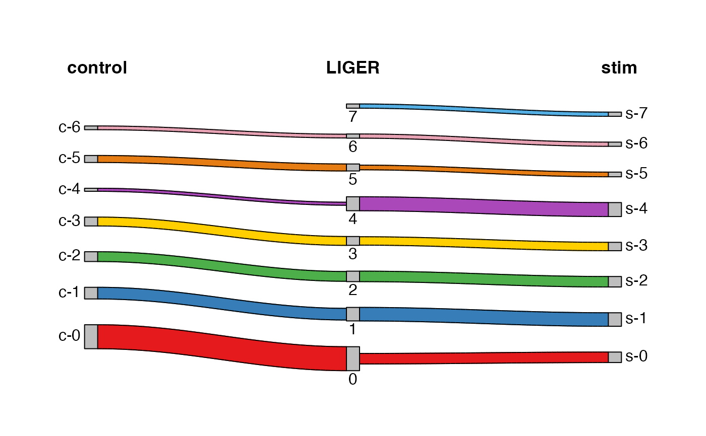

Make Riverplot/Sankey diagram that shows label mapping across datasets
Source:R/visualization.R
plotSankey.RdCreates a riverplot/Sankey diagram to show how independent cluster
assignments from two datasets map onto a joint clustering. Prior knowledge of
cell annotation for the given datasets is required to make sense from the
visualization. Dataset original annotation can be added with the syntax shown
in example code in this manual. The joint clustering could be generated with
runCluster or set by any other metadata annotation.
Dataset original annotation can be inserted before running this function
using cellMeta<- method. Please see example below.
This function depends on CRAN available package "sankey" and it has to be installed in order to make this function work.
Usage
plotSankey(
object,
cluster1,
cluster2,
clusterConsensus = NULL,
minFrac = 0.01,
minCell = 10,
titles = NULL,
prefixes = NULL,
labelCex = 1,
titleCex = 1.1,
colorValues = scPalette,
mar = c(2, 2, 4, 2)
)Arguments
- object
A liger object with all three clustering variables available.
- cluster1, cluster2
Name of the variables in
cellMeta(object)for the cluster assignments of dataset 1 and 2, respectively.- clusterConsensus
Name of the joint cluster variable to use. Default uses the default clustering of the object. Can select a variable name in
cellMeta(object).- minFrac
Numeric. Minimum fraction of cluster for an edge to be shown. Default
0.05.- minCell
Numeric. Minimum number of cells for an edge to be shown. Default
10.- titles
Character vector of three. Customizes the column title text shown. Default uses the variable names
cluster1,clusterConsensusandcluster2.- prefixes
Character vector of three. Cluster names have to be unique across all three variables, so this is provided to deduplicate the clusters by adding
"prefixes[i]-"before the actual label. This will not be applied when no duplicate is found. DefaultNULLuses variable names. An NA value or a string with no character (i.e."") does not add the prefix to the corresponding variable.- labelCex
Numeric. Amount by which node label text should be magnified relative to the default. Default
1.- titleCex
Numeric. Amount by which node label text should be magnified relative to the default. Default
1.1.- colorValues
Character vector of color codes to set color for each level in the consensus clustering. Default
scPalette.- mar
Numeric vector of the form
c(bottom, left, top, right)which gives the number of lines of margin to be specified on the four sides of the plot. Increasing the 2nd and 4th values can be helpful when cluster labels are long and extend out side of the plotting region. Defaultc(2, 2, 4, 2).
Note
This function works as a replacement of the function makeRiverplot
in rliger <1.99. We decide to make a new function because the dependency
adopted by the older version is archived on CRAN and will be no longer
available.
Examples
# Make fake dataset specific labels from joint clustering result
cellMeta(pbmcPlot, "ctrl_cluster", "ctrl") <-
cellMeta(pbmcPlot, "leiden_cluster", "ctrl")
cellMeta(pbmcPlot, "stim_cluster", "stim") <-
cellMeta(pbmcPlot, "leiden_cluster", "stim")
if (requireNamespace("sankey", quietly = TRUE)) {
plotSankey(pbmcPlot, "ctrl_cluster", "stim_cluster",
titles = c("control", "LIGER", "stim"),
prefixes = c("c", NA, "s"))
}
